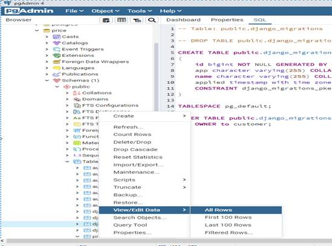
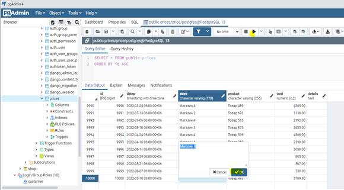
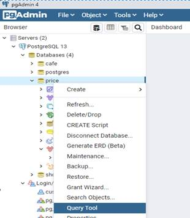
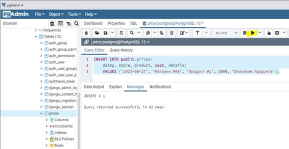

Цель практической работы: закрепление и расширение знаний, полученных обучающихся при теоретическом изучении предмета, приобретение конкретных практических навыков работы с таблицами базы данных.
Методические указания к выполнению работы:
Заполнение таблицы БД. Здесь также имеется два варианта. Первый способ подразумевает использование графического интерфейса.
Для этого вначале нужно выбрать в pgAdmin целевую базу данных «price», раскрыть узлы «Schemas» и «Tables», далее выбрать таблицу «prices», и запустить команды «View/Edit Data» и «All Rows» (рисунок 1).

Рисунок 1 – Окно заполнения таблицы БД посредством графичкеского интерфейса
В открывшейся панели можно внести необходимые изменения и сохранить записи путем выбора команды «Execute/Refresh (F5)», как видно на рисунке 2.

Рисунок 2 – Окно просмотра записей таблицы БД
Второй способ заключается в выполнении команды SQL. Для этого вначале необходимо выбрать в pgAdmin целевую БД «price», далее в контекстном меню выберем пункт Query Tool (рисунок 3).

Рисунок 3 – Окно заполнения таблицы БД посредством SQL
В центральной части программы откроется поле для ввода кода SQL, куда необходимо ввести команду SQL.
INSERT INTO public.prices(
datep, store, product, cost, details)
VALUES ('2023-08-27', 'Магазин №99', 'Продукт №1', 1000, 'Описание продукта');
Далее нужно выбрать команду «Execute/Refresh (F5)». Результат выполнения отразится в нижней части программы (рисунок 4).

Рисунок 4 – Окно кода создания записей таблицы БД
Задание:
Заполнить таблицы созданной согласно варианту базы данных записями.
Контрольные вопросы:
1. Варианты заполнения таблиц в pgAdmin
2. Способ заполнения таблицы БД посредством команды SQL
3. Для чего служит команда «Execute/Refresh (F5)»?